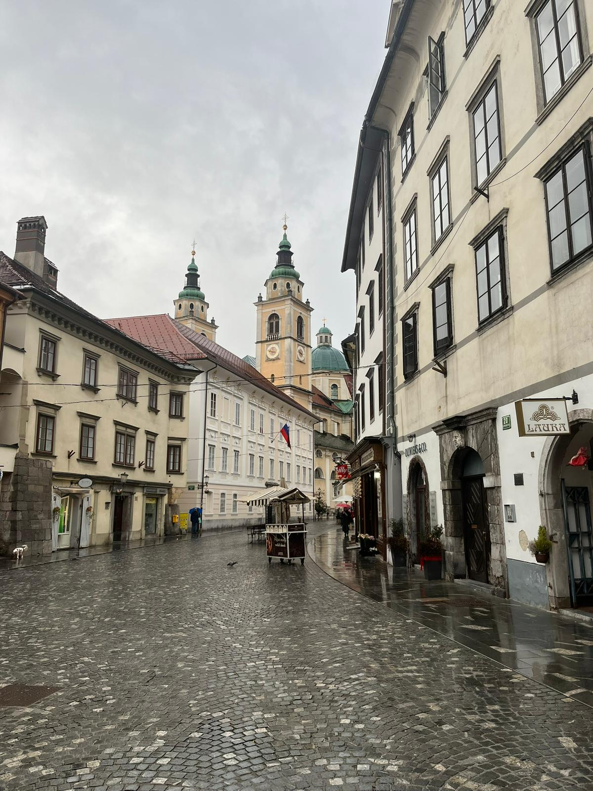
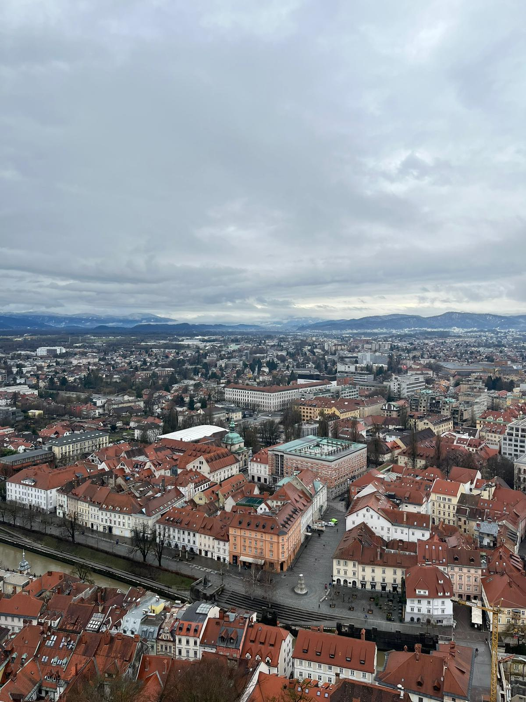

Slovenia
Ljubljana was the only city I visited in Slovenia during my Erasmus journey. It was a cute and pleasant city with a calm atmosphere, and walking around the city center was enjoyable. What surprised me the most was how small it felt. My friends and I managed to explore almost the entire city on foot in just four or five hours. Before leaving, we climbed up to Ljubljana Castle and enjoyed the view over the city. Although I had a good time, Ljubljana did not impress me as much as some of the other destinations I visited during Erasmus. Since I generally prefer larger and more lively cities, Slovenia was not one of my favorite stops.
Photo Gallery


Cities Visited
- Ljubljana
Favorite Place
Ljubljana Castle
My Rating
4/10 ⭐